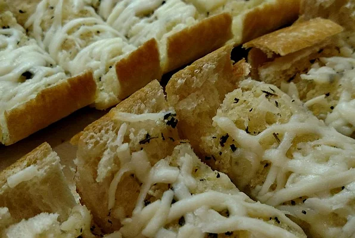

Garlic Bread

Description
Garlic bread is always great with pasta! This cheese-covered garlic bread
is ready in minutes.
Ingredients
- ½ cup butter
- 1½ tablespoons garlic powder
- 1 tablespoon dried parsley
-
1 (1 pound) loaf Italian bread, cut into 1/2 inch slices
-
1 (8 ounce) package shredded mozzarella cheese
Steps
- Preheat oven to 350 degrees F (175 degrees C).
-
In a small saucepan over medium heat, melt butter and mix with garlic
powder and dried parsley.
-
Place Italian bread on a medium baking sheet. Using a basting brush,
brush generously with the butter mixture.
-
Bake in the preheated oven approximately 10 minutes, until lightly
toasted. Remove from heat. Sprinkle with mozzarella cheese and any
remaining butter mixture. Return to oven approximately 5 minutes, or
until cheese is melted and bread is lightly browned.